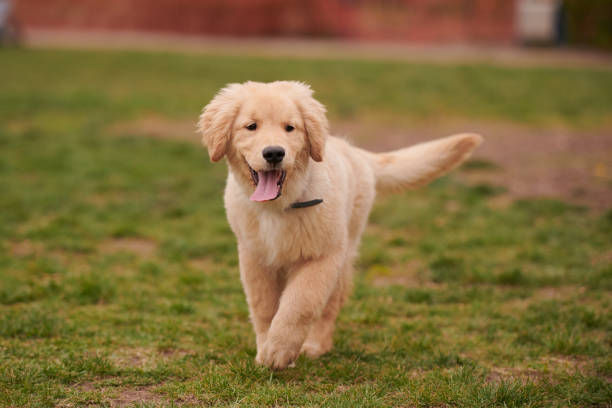
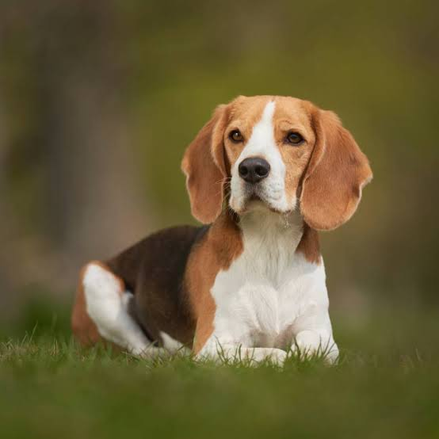
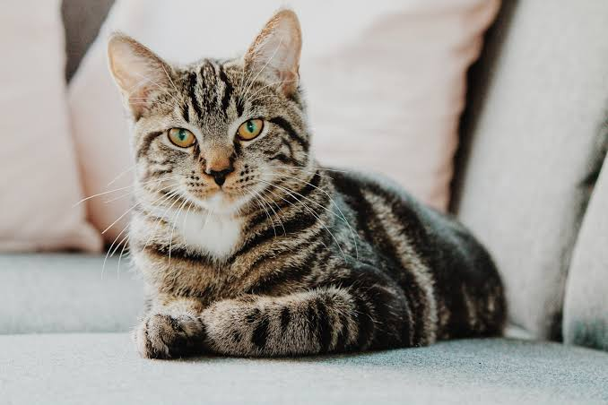

JuguetónMango
8 mesesMacho
Golden Retriever
Mango adora correr en el parque y es muy cariñoso con los niños. Está vacunado y desparasitado.

TranquilaLuna
1 año y medioHembra
Mestiza
Luna es muy obediente, le encanta pasear de forma calmada y se lleva excelente con otros animales en casa.
 Protector
Protector
Rocky
2 añosMacho
Pastor Alemán
Rocky es un perro muy leal, inteligente y activo. Ideal para hogares con espacio amplio y amantes de las caminatas largas.

CuriosaMila
6 mesesHembra
Siamés Mix
Mila es muy juguetona y le encanta dormir en lugares cálidos. Está esterilizada y lista para encontrar un hogar amoroso.
 Amigable
Amigable
Toby
1 añoMacho
Cocker Spaniel
Toby es sumamente alegre, le fascina jugar con la pelota y convive muy bien con otros perros. Vacunado al día.
 Tranquila
Tranquila
Cleo
2 añosHembra
Angora Mix
Cleo es muy independiente, elegante y de mirada tierna. Disfruta de los ambientes calmados y los espacios acogedores.
 Juguetón
Juguetón
Bruno
4 mesesMacho
Beagle Mix
Bruno es un cachorro lleno de energía, muy curioso y con muchas ganas de aprender. Vacunado con su primera dosis.
 Cariñoso
Cariñoso
Simón
3 añosMacho
Schnauzer Mix
Simón es un perrito tranquilo, muy noble y de excelente compañía para adultos mayores o departamentos. Desparasitado y con todas sus vacunas.
 Dulce
Dulce
Lola
2 añosHembra
Labrador Mix
Lola es una perrita sumamente dulce, le encanta recibir mimos y se adapta con mucha facilidad a cualquier hogar. Totalmente sana y vacunada.